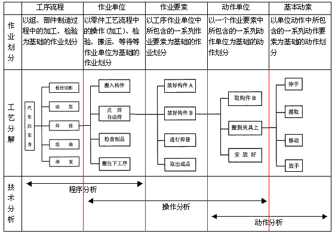

方法研究的内容
方法研究的分析层次及分析技术见表4-2。从表4-2可以看出，方法研究的内容包括了程序分析、操作分析和动作分析。
表4-2 法研究的分析层次及分析技术

1．程序分析(流程分析)
完成任何工作所需要经过的路线和手续即为程序。
程序分析主要以整个生产过程为研究对象。研究分析一个完整的工艺程序，从头到尾全面研究、分析是否有多余的或重复的作业。程序是否合理、搬运是否太多、等待时间是否太长等，并进行工作程序和工作方法的改进。
程序分析的目的是：
(1)取消不必要的程序(工艺、操作、动作)；
(2)合并一些过于细分或重复的工序；
(3)改变部分操作程序，以避免重复；
(4)调整布局，以节省搬运；
(5)重排和简化必要的程序，重新组织效率更高的完整程序。
2．操作分析(作业分析)
操作分析主要研究以人为主体的程序，使操作者(人)、操作对象(物)、操作工具(机)三者科学地组织、合理地布局与安排，以减少作业时间的消耗，减轻操作者的劳动强度，保证工作质量。
3．动作分析
研究分析人在进行各种操作时的身体动作，以消除多余的动作，减轻劳动强度，使操作简便更有效，从而制订出最佳的动作程序。